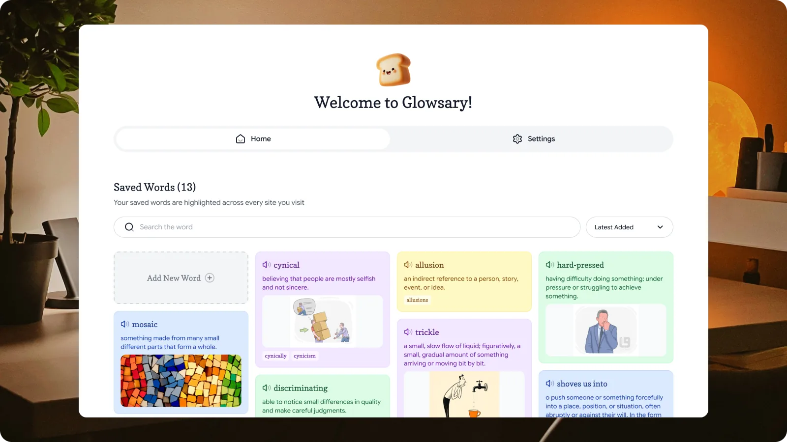
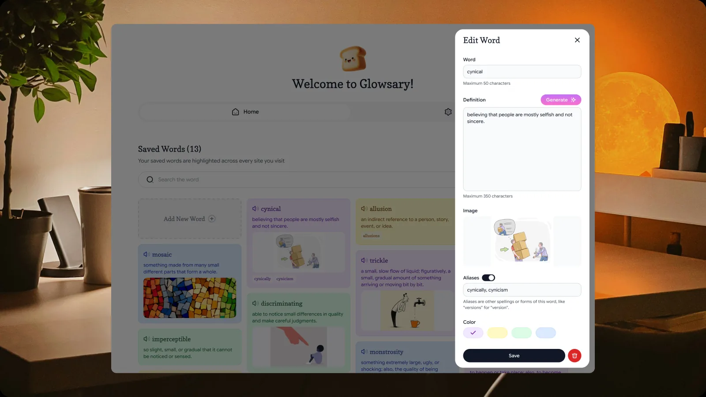
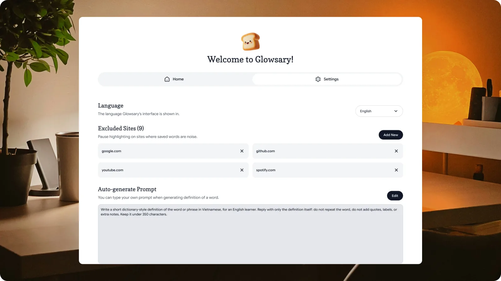
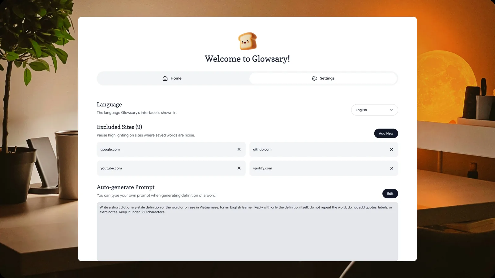

Glowsary: Build Your Vocabulary as You Read Online
A Chrome extension that remembers the words you look up. Save a word once with your own meaning, and Glowsary underlines it everywhere you read after that. I designed, specified and shipped it on my own.

Project Overview
Glowsary is a Chrome extension that adds a personal vocabulary layer over the web. You save a word or phrase with your own definition, and from then on that word carries a quiet underline everywhere it appears while you read. Hover it and your definition comes back.
The closest thing people already know is Word Wise on a Kindle. The difference is that the words are the ones you chose, not a fixed list, and the meaning stays hidden until you ask for it.
I did every part of this on my own: the product thinking, the written requirements, the design system in Figma, and the build itself with Claude Code. The first version went in on 2 June 2026 and it was on the Chrome Web Store the same month. I am still shipping updates to it.
The Problem
I read a lot of English articles on Medium and Substack. I kept looking up the same word again and again and never remembered it. Nothing on the page told me I had already searched for that word before, so every new article felt like meeting it for the first time.
The effort of the lookup was real, but it disappeared the moment I closed the tab. That is the thing I wanted to fix. Not teaching vocabulary, and not testing anyone. Just making sure the work a reader already did stays visible to them.

How I Worked
Being the only person on a project sounds like freedom. In practice it removes every natural checkpoint, so I had to build my own.
I wrote a product requirements document first and kept it as the single source of truth for the whole project. Every behaviour in the product is a numbered requirement in that file, down to the minimum length of a saved word, what a duplicate does, and what the interface shows when a saved image link stops working.
Then I set one rule for the build. No code gets written until there is a written plan I have read and approved. Claude Code proposes the plan, I review it against the requirements, and only after I hand it back does anything get built. When the design and the document disagreed, I fixed the document first and rebuilt from there.
Designing the Highlight
The hardest design problem was that Glowsary does not own the page it appears on. The same highlight has to sit on a news site, a personal blog and a GitHub issue, and stay readable and quiet on all of them.
I settled on a dashed underline in the colour of the saved word. Dashed so it is never mistaken for a hyperlink, and coloured so a reader can tell their own groups of words apart at a glance.
Then came the rules about where it is not allowed to go. A saved word is never highlighted inside a link, a button, a navigation bar, a form field or a label. There are two reasons. An underline inside a link is genuinely confusing, and changing interactive elements risks breaking the site underneath. If a word appears both in a link and in body text on the same page, only the body text gets marked.
When a definition popup opens, the word gets a soft fill behind it and its own text switches to a dark shade of its colour. That last part exists because I do not control the page's text colour. On a dark site, a light fill with the site's white text on top would be unreadable. Forcing the text colour was the only way one design could work everywhere.

Rethinking the AI Feature
Writing your own definition is the default, but there is an optional action that drafts one for you. It shipped first with an API key built into the extension, shared by everyone. It kept getting blocked, which is obvious in hindsight. A key inside a published extension is public to anyone who cares to look.
I removed it and moved to the reader's own free Gemini key, added in Settings. That is a worse first run and I knew it, so I made the setup as short as I could: a direct link to where the key is created, and a tutorial video embedded under the field so nobody has to leave the page to follow it.
The second change was the better one. The feature started with a language dropdown, English or Vietnamese. I replaced the entire dropdown with a single prompt field the reader can rewrite. It removed a setting and it opened the product to every language instead of two. My own default writes short Vietnamese definitions for an English learner, but that is a default, not a limit.

Decisions I Had to Defend
Matching is exact, and nothing is guessed. Saving "love" does not highlight "loved" or "loving". Guessing word forms would have been easy to build and impossible for a reader to predict. Instead they add the forms they want as aliases, so "version" and "versions" share one definition. What lights up stays under their control.
The same word can be saved more than once. There is no duplicate check anywhere in the product. A word can carry several meanings, so the popup pages through them, newest first. Blocking duplicates would have forced people to squeeze two meanings into one field.
Hover is the only way to reveal a definition. No click and no keyboard shortcut. The whole point is that reading is not interrupted, and a click is an interruption.
Delete happens immediately, with no confirmation and no undo. This is the one I went back and forth on longest. I accepted the risk. Every other action in the product is a single step, and a confirmation dialog over a list of personal words felt heavier than the mistake it would prevent.
What I Took From It
Writing the requirements before the interface changed how I work. When every behaviour is written down as a rule, the edge cases surface while they are still cheap to change, instead of after the screens exist and someone has to redraw them.
It also gave me a way of working with AI that I actually trust. I do the thinking and the deciding, the AI does the typing, and the written plan in between is what keeps us both honest. That is the same shape as working with a developer, which is what made it easy to fall into.